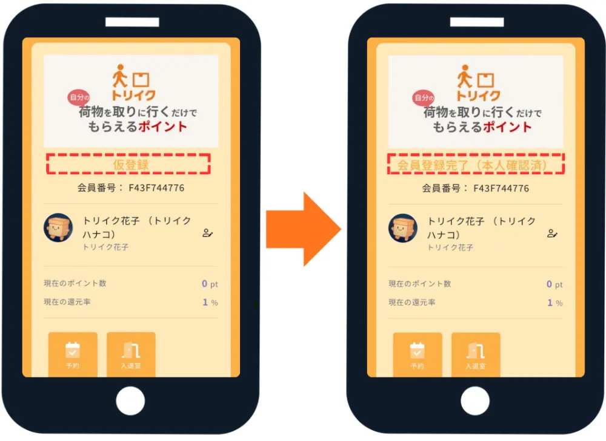

会員ランク・
登録状況の確認方法
トリイクスポットへ入室いただけるかどうかは、会員ランクで判断できます。確認方法を解説します。
STEP 01
「会員登録 会員情報確認」をクリック
トリイク公式LINEのLINEメニューから「会員登録 会員情報確認」をクリック。
STEP 02
会員ランクを確認
会員登録が完了し、トリイクスポットへ入室いただける方の会員ランクは、以下のいずれかになります。
入室OK
- 会員登録完了(本人確認済)
- スタンダード
- ブロンズ
- シルバー
- ゴールド
- プラチナ
- ダイヤモンド
入室不可
仮登録
「仮登録」は会員登録が完了していない状態です。トリイクスポットへ入室いただけず、荷物をお受け取りいただけません。

※ オンラインでの本人確認後、原則24時間以内に会員ランクを変更致します。もし会員ランクが反映されていない等、ご不明な点がございましたらLINEにてご質問ください。
※ トリイク公式LINEからWEBフォームで会員登録を実施いただいた方には、「オンラインによる本人確認の依頼」をメールでお送りしています。当メールより本人確認を実施ください。なお、当メールを紛失してしまった場合、再送が可能ですので、再送を希望する旨をトリイク公式LINEチャット欄で申しつけください。